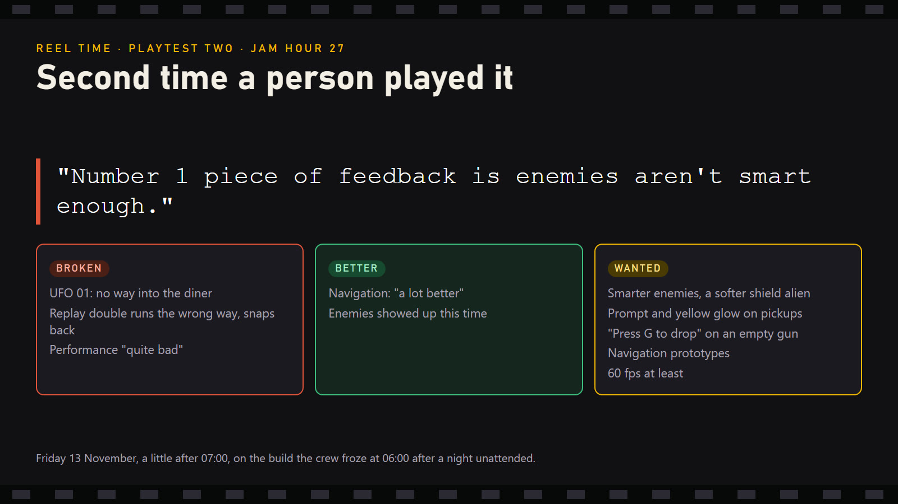
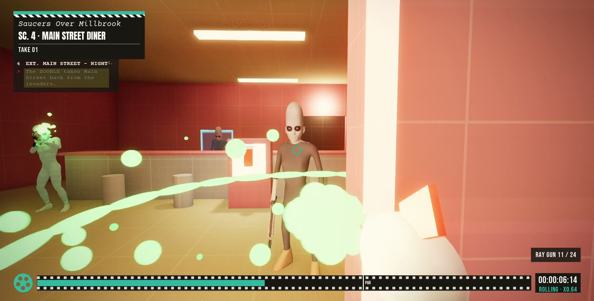

Playtest two: the enemies turned up, and they aren't smart enough
I played the build the crew froze at 06:00 after a night on its own. Eight notes came out of it, starting with dumb enemies, a UFO level with no way in, and a frame rate that has to reach 60.
Day 2, Fri 13 NovHour 27
I went to bed at 22:30 on Thursday with one instruction: a playtest at 07:00, with a report of what changed. The crew stopped adding things at 05:15, fixed blockers only until 06:00, and left me a launcher and a morning report. (The night shift has what they built.)
The report was honest about what it couldn't promise:
"UFO 01 and Noir 01 have never been completed by the autoplayer. Three real blockers were found and fixed in the last hour, none seen on film."

What I told the Director
Last time there were no enemies at all. This time:
"Number 1 piece of feedback is enemies aren't smart enough."
And one of them is too much the other way: "The Alien with the shield is a bit too hard to kill."
One level can't be finished.
"The first UFO level is impossible to complete as the mesh for the diner doesn't have a way in."
That was one of the three blockers "fixed in the last hour". The autoplayer had found a 0.9 m panel across the diner door at about 05:30, the level kit was changed, and nothing walked through the door afterwards. The fix didn't work in practice. The engine session is now finding out what blocks it.

Finding my way. "It's a lot better but I still find it hard to navigate, maybe we need to prototype some different navigation methods." Pickups like the keys "need a simple interaction prompt and a yellow glow".
An empty gun. It should say "press G to drop", and a weapon nearby should glow so I know where to go next.
The replay. "I see my character continuing to run a direction I didn't and snap back often." The replay is the game's whole idea, so that one's a top priority.
Performance. "It's quite bad, with lighting, post processing and DLSS being the big hitters… I don't mind if we want to go for a non-Lumen approach but we need to be hitting at least 60 fps on this machine."
What happened next
The notes were with the Director at 07:28. By 07:36 the work was out:
- the diner door, plus a doorway proof for every level, to the second World session
- the DLSS fix, then pickup glow, prompts and "G to drop", to Gameplay
- replay accuracy, then two navigation prototypes, to the second Gameplay session
- a table of what each level costs the graphics card, due within the hour, to the feel session
- smarter enemies and the shield alien to the NPC session
- a warning to the lighting session that a budget is coming
The Director also asked me two things back: did I play the standalone game or in the editor (the editor runs at roughly half the frame rate), and what exactly felt dumb about the enemies.
The lesson from playtest one was "we tested the levels, not the journey between them". This one is close to it: a fix isn't done until something has walked through the door.
Update, 07:55: why the diner had no door
The second World session found it within twenty minutes. The fix was real: a corrected diner mesh was written at 05:05. It was never imported. The asset in the game was still Thursday evening's, panel and all, so the kit ran, reported success and changed nothing.
The kit now reimports a mesh whenever its source file is newer, and the diner gets a glowing door frame while it's at it. It still needs the engine's rerun, a walk test and film before I'll call it fixed.
08:55. There was a second cause underneath. The kit switched the door panel's collision off, and the mesh's own "block everything" profile switched it back on every time the level loaded. Two faults, one blocked door. The same pattern is in six other kit files, and they're being fixed too.